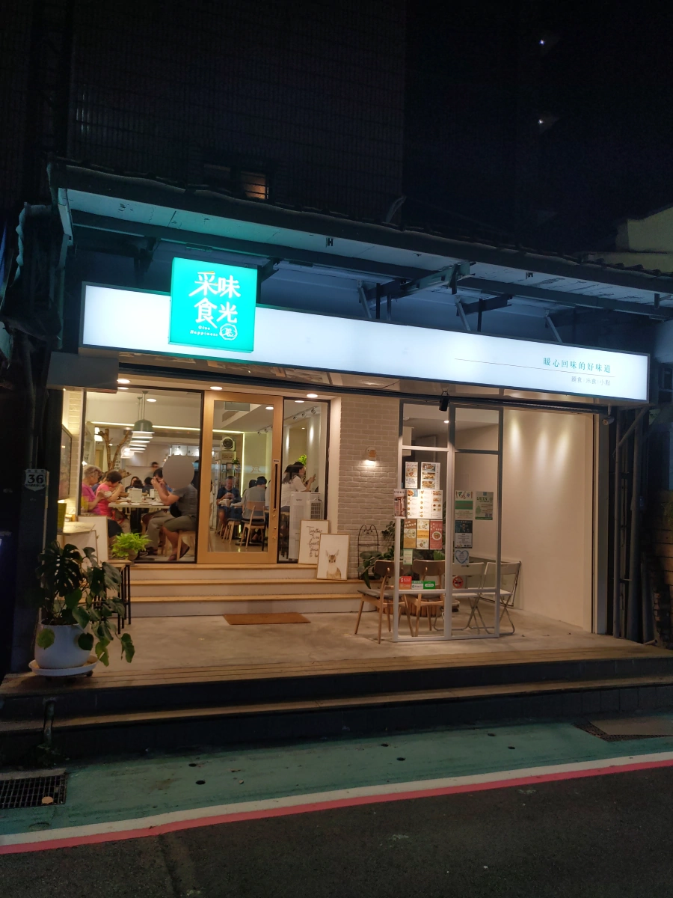
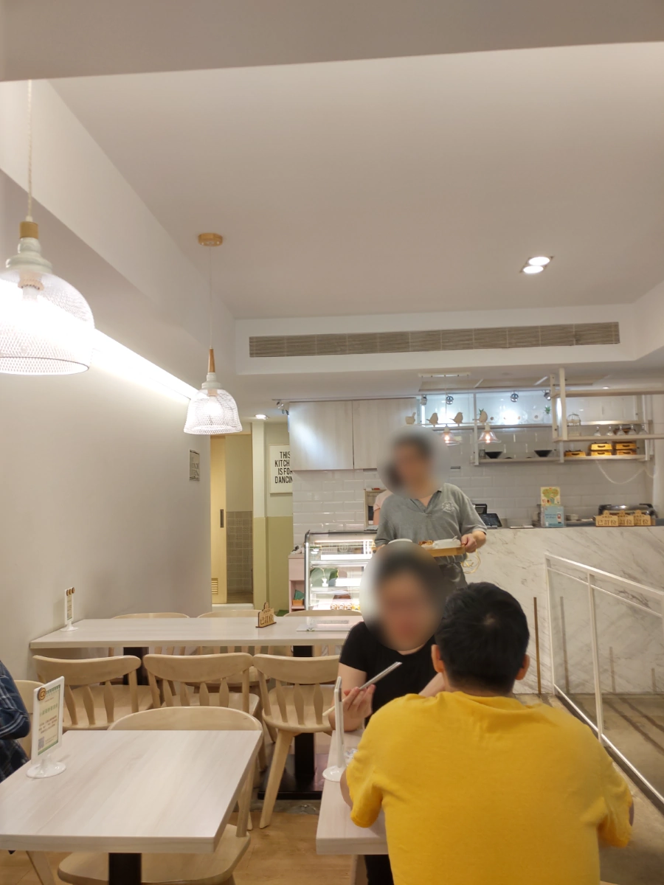
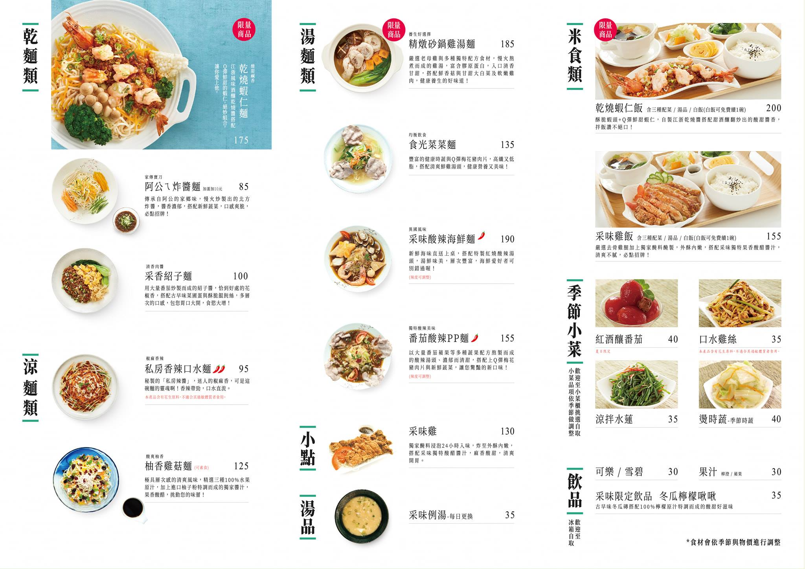
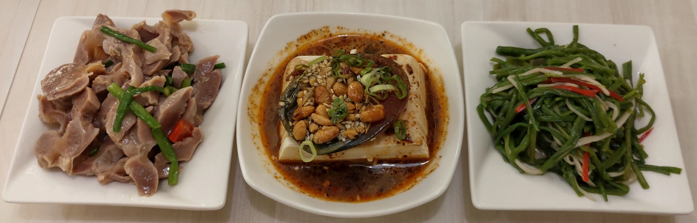
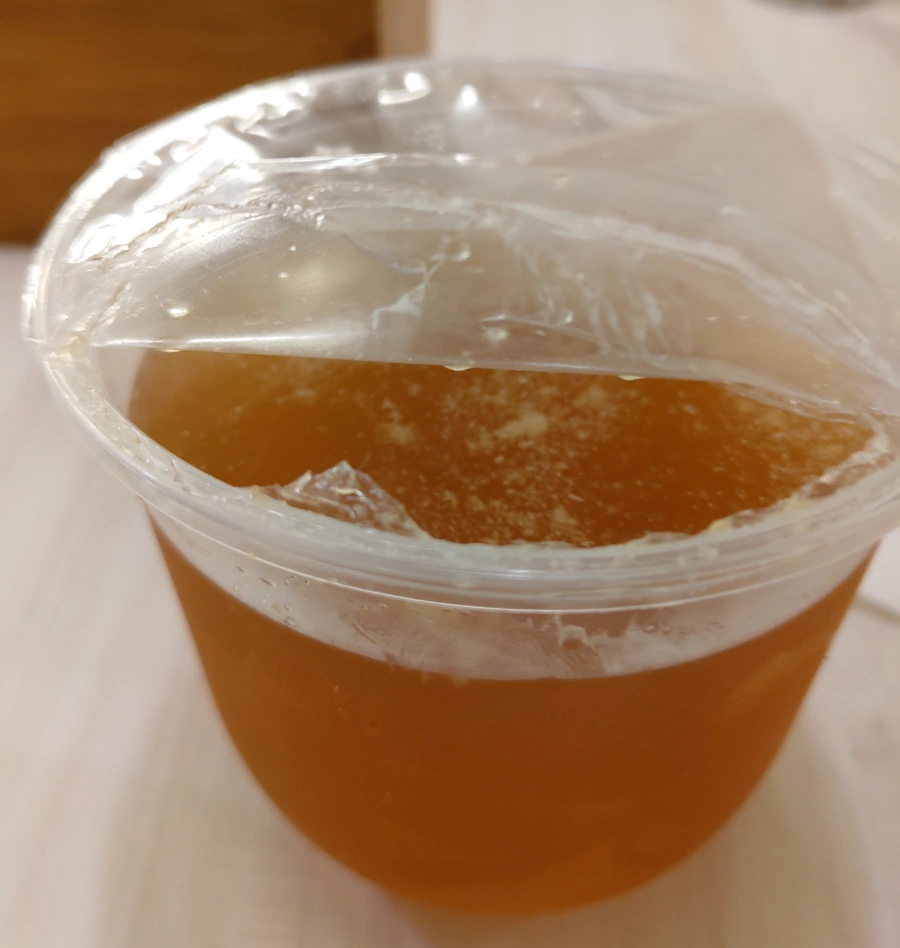
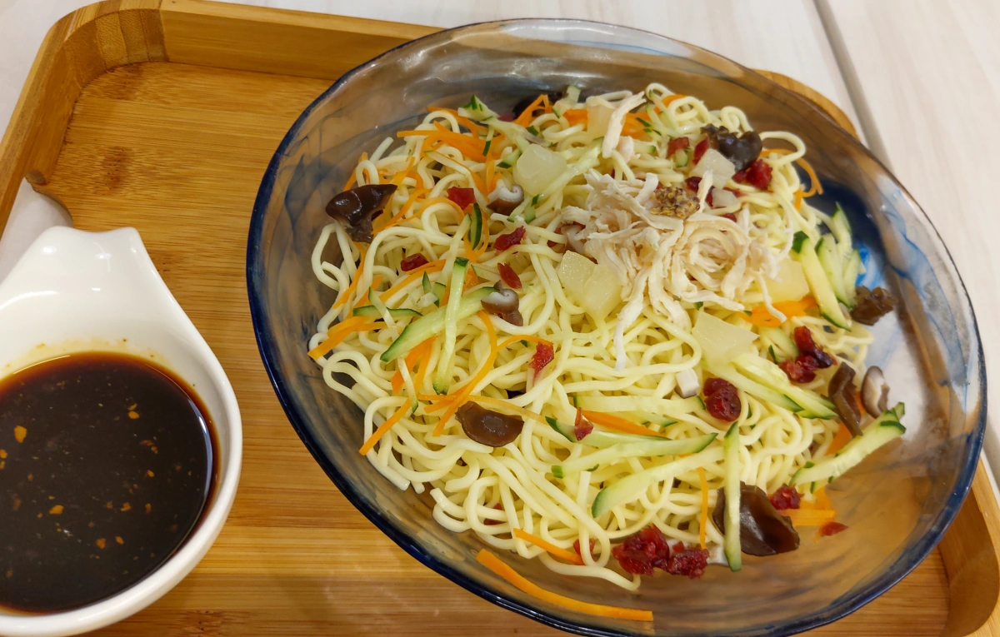
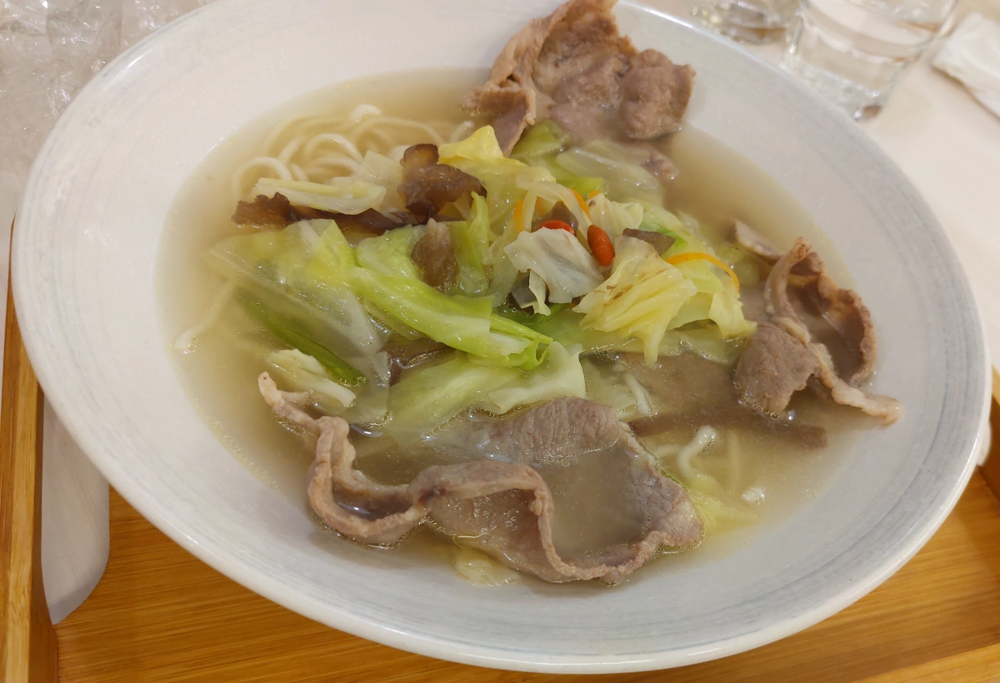
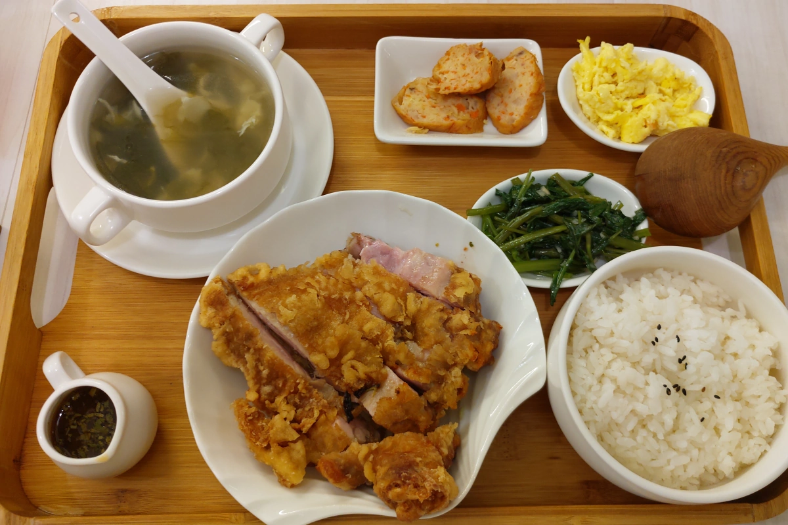
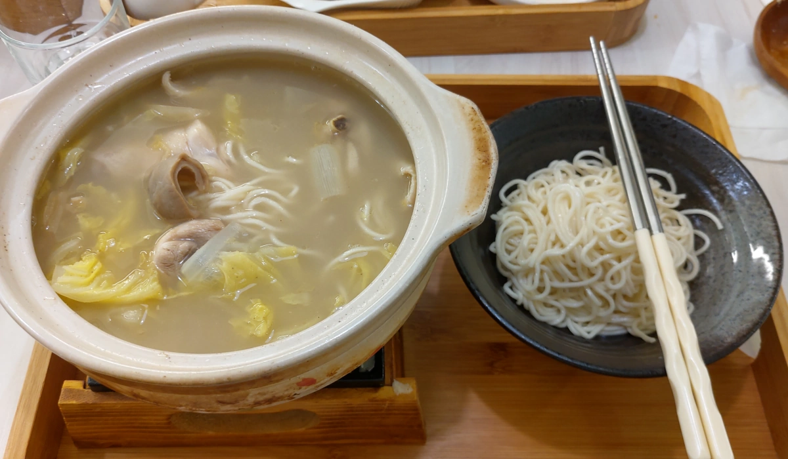

[台北] 采味食光 Give Happiness
| 餐廳名稱: | 采味食光 Give Happiness |
|---|---|
| 地 址: | 台北市大安區和平東路2段118巷36號 |
| 營業時間: | 週一~週五 11:30 ~ 14:00 17:00 ~ 20:30 |
| 週六~週日 11:30 ~ 14:15 17:00 ~ 20:30 | |
| 電 話: | 02 2736 6256 |
今天有個小型家族聚餐，女王選了一個走路能到的精緻簡餐餐廳 - 采味食光。開業好幾年了， Google分數高分，從一些部落格文章知道，主廚曾任職五星飯店，後來再去法國藍帶學習，回國後開這間簡餐店。 照理說，在藍帶應該是學法國菜，這個中式簡餐應該是任職五星飯店時 扎根的， 我舌頭愚鈍，吃不出什麼法國藍帶手法，倒是這些簡餐吃起來味道都還可以， 也不用管什麼藍帶不藍帶了。
這是用餐完畢離開時照的，客滿客滿。刻意早點到，那時候還有位子，之後就客人陸陸續續上門，很快就客滿了。 
最裡面是櫃台，廚房似乎在櫃檯後面。 
忘了拍菜單，官方網站只有這張舊菜單，老闆應該不會介意吧。但是這張菜單跟現況有點差異， 有一個剛研發出來的 紅燒膠原軟骨麵 不在這舊菜單上。而且新菜印刷成三、四張紙， 跟菜單夾在一起，大概是為了避免小更動，就重印整個菜單吧。 
拿了三個小菜，從左到右分別是 涼拌雞胗、皮蛋豆腐、涼拌水蓮。小菜擺在餐廳中間的冷藏玻璃櫃，自行取用。 旁邊是餐具，也是自行取用。但是沒看到出名的口水雞絲，難道要用點的? 可是菜單上的涼拌水蓮又擺在那邊。 這三個小菜，調味均屬上乘，平常沒那麼愛吃水蓮，沒想到這個涼拌水蓮軟硬適中，鹹度適中，還挺不錯的。 涼拌雞胗也很好吃。反倒是最不容易失敗的皮蛋豆腐，沒有另外兩個出色，那個醬汁不合胃口吧，但也還不錯吃。 
冬瓜檸檬啾啾，就是冬瓜檸檬汁，中規中矩，小杯了點。不過店家有提供開水與杯子自行取用，不點飲料也沒關係。 
私房香辣口水麵，算是某種創意涼麵吧，味道跟常見的麻醬涼麵截然不同。主廚試圖自創某種麻辣帶酸的口味， 我的話這次吃幾口嘗鮮就好了，不難吃，可是還是傳統的麻醬涼麵吃得比較習慣，最好加些絞肉做的炸醬。 
食光菜菜麵，古早味，好喝的高湯，加上肉片、青菜、麵。簡單好吃。 
采味雞飯，這類似椒麻雞，是通俗的好味道，平常就是暢銷菜。好吃。 
胡椒豬肚砂鍋雞湯麵，不難吃，甚至很多部落格都稱讚。但是跟我吃過的專業胡椒豬肚雞砂鍋有差距， 當然專業的也是貴很多，這樣比不公平。 我感覺店家其實只有事先準備砂鍋雞這道菜，客人點了胡椒豬肚砂鍋雞湯麵後，就 砂鍋雞加上事先滷好的豬肚，湯頭加上大量胡椒，這種臨時組合的，就沒有融合的感覺，豬肚很硬， 如果是燉煮很久應該軟一點，湯頭只感覺到雞湯、胡椒，沒感覺到其他香料，當然也有可能是 我的舌頭不靈敏。Anyway，覺得OK而已，吃這一次，有個經驗就好，沒吃過可以吃。 
整體來看，還是會回訪。因為主餐、配菜都不錯，很討厭應付式、難吃的配菜，這邊不會。小菜也優秀。 裝潢現代，服務態度佳，價格可能因為客源以台大學生為主，都還蠻合理的。所以接下來就看緣分了， 緣分到了，自然就回訪了。